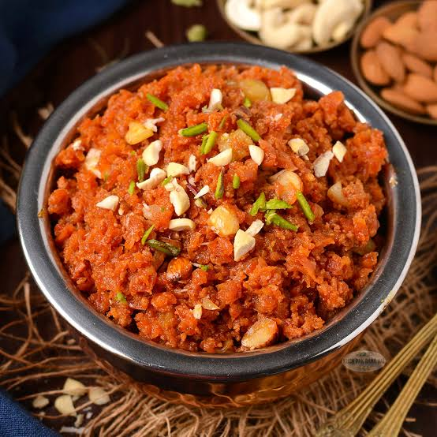

Telugu Ruchulu
తెలుగు రుచులు
CarrotHalwa
క్యారెట్లుహల్వా
Home Page
Click to change the language
తెలుగు కోసం క్లిక్ చేయండి
Ingredients:
4 cups grated carrots
2 cups full-fat milk
½ cup sugar (adjust to taste)
3 tbsp ghee (clarified butter)
½ cup khoya (optional, for richness)
¼ tsp cardamom powder
10-12 cashews, chopped
10-12 almonds, sliced
10-15 raisins

Instructions:
Cook the Carrots –
In a heavy-bottom pan, add grated carrots and milk. Cook on medium heat until the milk reduces and thickens. Stir occasionally.
Add Sugar & Khoya –
Once the milk is almost absorbed, add sugar and khoya. Stir well and continue cooking.
Enhance with Ghee –
Pour in the ghee and cook until the halwa turns glossy and aromatic.
Flavor with Cardamom –
Add cardamom powder and mix well for a rich flavor.
Garnish & Serve –
Fry cashews, almonds, and raisins in a little ghee, then mix them into the halwa. Serve warm.
Tip
కావలసినవిః
4 కప్పులు తురిమిన క్యారెట్లు
2 కప్పులు పూర్తి కొవ్వు పాలు ½
కప్ చక్కెర (రుచికి సర్దుబాటు చేయండి)
3 టేబుల్ స్పూన్లు నెయ్యి
½ కప్ ఖోయా
¼ స్పూన్ యాలకుల పొడి
10-12 జీడిపప్పు, తరిగినవి
10-12 బాదం, ముక్కలు
10-15 ఎండుద్రాక్ష
క్యారెట్లను ఉడికించాలి -
ఒక భారీ దిగువ పాన్లో, తురిమిన క్యారెట్లు మరియు పాలు జోడించండి. పాలు తగ్గి చిక్కబడే వరకు మీడియం వేడి మీద ఉడికించాలి. అప్పుడప్పుడు కదిలించు
చక్కెర & ఖోయా జోడించండి -
పాలు దాదాపుగా గ్రహించిన తర్వాత, చక్కెర మరియు ఖోయా జోడించండి. బాగా కదిలించు మరియు వంట కొనసాగించండి.
నెయ్యితో మెరుగుపరచండి -
అందులో నెయ్యి పోసి, హల్వా నిగనిగలాడే మరియు సుగంధంగా మారే వరకు ఉడికించాలి
ఏలకులతో ఫ్లేవర్ -
యాలకుల పొడి వేసి, రిచ్ ఫ్లేవర్ కోసం బాగా కలపాలి.
గార్నిష్ & సర్వ్ -
జీడిపప్పు, బాదం మరియు ఎండుద్రాక్షలను కొద్దిగా నెయ్యిలో వేయించి, ఆపై వాటిని హల్వాలో కలపండి. వెచ్చగా వడ్డించండి.
చిట్కా